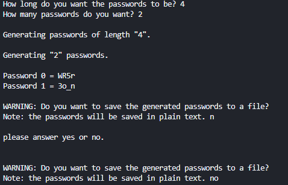

Started this project to create strong, randomly Generated passwords, for users who didn't want to use other softwear to store and Generate passwords. I also wanted the softwear to be as user friendly as posseble while still keeping its main aim of functionality. This project took allot of time originally as I had not planed the project befor I started to code it which is a lesson i have since learned from.

At first I was only going to program the password Generator function of the program but after that was complete I realised I wanted to add some extra utility to the program to test my skills. Curently the program can Generate, save and display passwords and randomised string usernames. The main feature id like to add to the program is a encrypt and decrypt function that allows the Generated passwords to not be stored in plain text which is not secure. The program allows the user to generate passwords between the lengths of 4 and 24 and up to 20 at a time.
The project, In my opinion, is a success and fulfills the goal I had. This project was the first real piece of softwear I made to fulfill a purpose and i belive that the program is efficent and user friendly. If youd like to download the softwear you can find it on my Github account here.